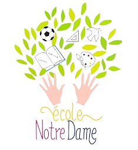

Design UI & UX · Refonte de site web
Une école fondée en 1900 à Albert (Somme). Le projet consistait à refondre sa direction artistique et à concevoir un site vitrine complet, avec un espace dédié à la publication d'articles pour l'établissement.

École Notre Dame, à Albert — fondée en 1900. Le site précédent ne reflétait plus l'identité de l'établissement et manquait d'un véritable espace d'actualités pour communiquer avec les familles.
Refonte complète de la direction artistique et création d'un site sur-mesure, pensé mobile first, avec une page dédiée à la publication d'articles. Projet mené sur 2 mois.
Une palette de bleus, associée à la confiance et à la sérénité — des valeurs importantes pour une école aux yeux des élèves comme des parents.
Montserrat, pour un ton moderne correspondant à la refonte de direction artistique voulue par l'école.
Un parcours pensé simple : depuis l'accueil, l'utilisateur accède directement aux articles publiés par l'école.